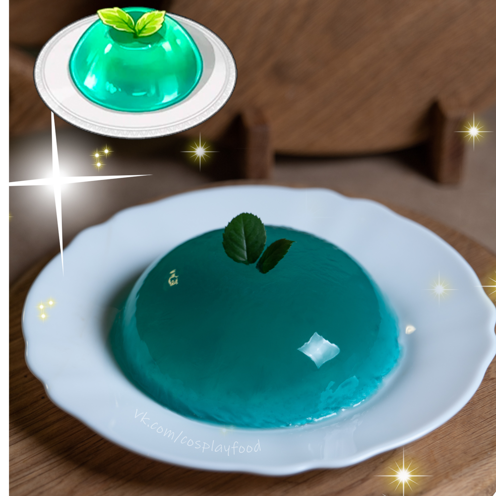

 Ингредиенты:
- Сахар 1 ст. л.
- Мята (на глаз)
- Желатин 1шт.
- Вода (зависит от того, сколько желе вы хотите приготовить)
Способ приготовления:
Налить в кастрюлю воду, положить мяту, добавить сахар и вскипятить. Варить несколько минут на маленьком огне, после достать мяту из кастрюли и в теплую воду насыпать желатин, размешать и дать ему набухнуть. Когда желатин набух, разлить в формочки и поставить в холодильник. Когда желатин застыл, можно доставать желе из формочки, посыпать сверху сахарную пудру и наслаждаться блюдом.